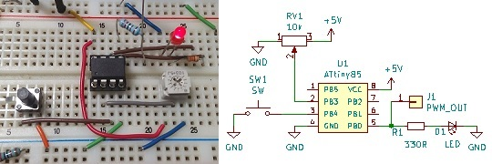
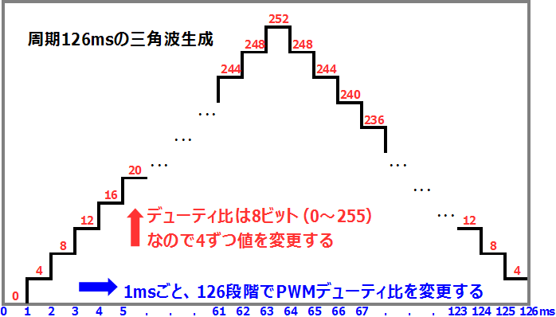
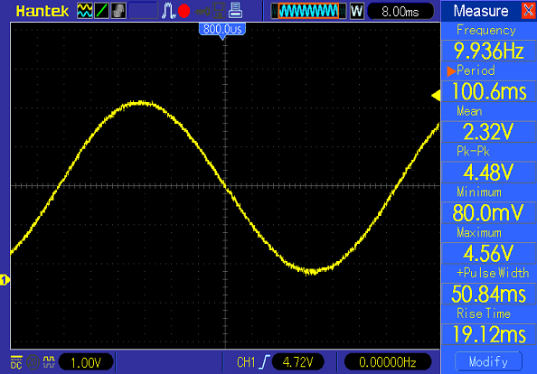

ATtiny85 タップテンポ付LFO その1
2018年08月23日 カテゴリー：実験等

モジュレーション系のエフェクターを作る場合Low Frequency Oscillator(LFO)は必須となりますが、タップテンポ機能をつけたかったのでマイコンを利用しました。2ループスイッチャーのときと同じATtiny85で、接続は上図右です。参考サイト→Arduino: LFO Generator
上記サイトのスケッチもなんとなく理解したつもりですが、初心者（私）向けに自分でプログラミングしてみることにしました。※あまり高品質ではないと思います。
下図は周期126msの三角波の例です。PWMについての詳細説明は省略します。analogWrite関数でPWM出力のデューティ比を変更することにより、256段階の電圧が出力できると大雑把に考えておけばよいかと思います。

1周期を126分割して考え、1ms経過するごとに4ずつデューティ比を変化させます。1msではなく1.024ms間隔にしたときは、1.024×126で周期129msです。このようにデューティ比変更間隔時間を変えることで周期を変化させます。実測では少しずれるので補正を入れます。
下記スケッチでは予め計算した配列を用意し、正弦波を生成しています。ATtiny85を8MHzで動作させるため、Arduino IDEのツールメニューから「Clock: "8 MHz (internal)"」を選択し「ブートローダを書き込む」という操作を行っておく必要があります。
▽Arduinoスケッチ（69行）
const int PWMpin = 0;
const int POTpin = 3;
const int SWpin = 4;
unsigned long tapTime1 = 0; // 前回タップ時刻
unsigned long tapTime2 = 0; // 今回タップ時刻
unsigned long SWcount = 0; // スイッチ用カウンタ
int oldPOTvalue = 100; // 前回ADC読取値
int newPOTvalue = 100; // 今回ADC読取値
int i = 0; // PWM用カウンタ 0～125
unsigned long rate = 4000; // デューティ比変更間隔時間 us
int rateAdj = 24; // rate補正値 LFO周期: 126 * ( rate + rateAdj ) us
int rateMin = 760; // rate最小値 us
unsigned long preTime = 0; // 前回デューティ比変更時刻
unsigned long postTime = 0; // 現在時刻
byte sineTable[] = {
0, 0, 1, 1, 3, 4, 6, 8, 10, 13, 15, 19, 22, 26, 30, 34,
38, 43, 48, 53, 58, 64, 69, 75, 81, 87, 93, 99, 105, 111, 118, 124,
130, 136, 143, 149, 155, 161, 167, 173, 179, 185, 191, 196, 201, 206, 211, 216,
220, 224, 228, 232, 235, 239, 241, 244, 246, 248, 250, 251, 253, 253, 254, 254
};
void setup() {
TCCR0B = 0b00000001; // PWM高速化 64倍(分周なし) 31.25kHz
pinMode(PWMpin, OUTPUT);
pinMode(POTpin, INPUT);
pinMode(SWpin, INPUT_PULLUP);
}
void loop() {
// タップテンポ----------------------------------------------------------------
SWcount = 0;
while (digitalRead(SWpin) == LOW) {
SWcount++;
if (SWcount == 10) { // チャタリング対策 10msスイッチ押下で検出
tapTime2 = millis() / 64; // PWM高速化の影響でmillis時間が64倍になる
// タップ間隔制限 0.1秒～3秒
if ( 100 < tapTime2 - tapTime1 && tapTime2 - tapTime1 < 3000) {
rate = (tapTime2 - tapTime1) * 7.9365 - rateAdj; // タップ間隔換算
}
tapTime1 = millis() / 64;
}
delayMicroseconds(625); // 1ms待機（約1.6倍になる?）
}
// ADC-------------------------------------------------------------------------
newPOTvalue = analogRead(POTpin);
if (abs(newPOTvalue - oldPOTvalue) > 2) { // ADC読取値が3以上変化でrate変更
rate = rateMin + 24 * newPOTvalue;
oldPOTvalue = newPOTvalue;
}
// LFO-------------------------------------------------------------------------
if (i == 126) i = 0;
while (micros() / 64 - preTime > rate - 300) {
// 普段はスイッチ検出待ちのためメインループを繰り返すが、
// デューティ比変更予定時刻の300us前になったらこのループ内に入り待機する
postTime = micros() / 64;
if (postTime - preTime >= rate) {
if (i < 64) analogWrite(PWMpin, sineTable[i]); // 正弦波（上昇）
else analogWrite(PWMpin, sineTable[126 - i]); // 正弦波（下降）
preTime = postTime;
i++;
break;
}
}
}
PWM出力に2.2kΩ抵抗器と1μFコンデンサのローパスフィルター（カットオフ周波数72Hz）を通し、オシロスコープで波形を確認しました。

遠目に見るとよさそうなのですが、拡大すると結構ギザギザです。このままエフェクターに利用できるのかどうかは不明です。
＜時間分解能を上げるには＞
micros関数での時刻取得には0.01ms程度時間がかかってしまうため、 これが時間計測の最小単位となります。やはり参考サイトにあるようにタイマー割り込みを使うべきでしょう。さらにできれば8ビットではなく16ビットタイマー付きのマイコンを使いたいところです。
---以下2018年8月25日追記---
途中で（おそらくオーバーフロー時）止まる不具合がありましたが、LFO部分の条件式を以下のように修正したところ解決したようです。参考ページ→millis()のオーバーフローの実験
micros() / 64 > preTime + rate - 300
↓
micros() / 64 - preTime > rate - 300